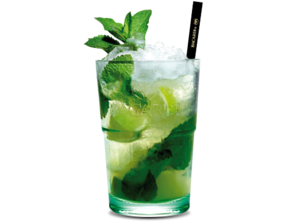

Mojito Recipe

Description
Mojito is a traditional Cuban highball. The cocktail often consists of five ingredients.
White rum, sugar (traditionally sugar cane juice), lime juice, soda water, and mint.
Its combination of sweetness, citrus, and herbaceous mint flavors is intended to complement
the rum, and has made the mojito a popular summer drink.
Ingredients
- lemon
- mint leafes
- brown sugar
- fresh lemon juice
- sugar liquid
- white rum
- dark rum
- sparkling water
- crushed ice
Steps 1 drink
- half of lemon
- 7-8 mint leafes
- 1 unze suguar liquid
- 1 unze fresh lemon juice
- 1 1/2 unze white rum
- 2 tea spoons brown sugar
- stomp everything
- fill half of cup with crushed ice
- sparkling water
- 1/2 unze dark rum on the top